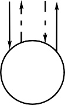
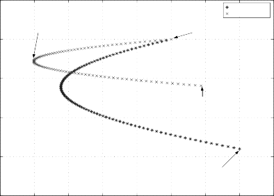

One can immediately see the benefits of a market-neutral strategy in the information ratio. Since the correlation between EL and ES is always less than or equal to 1, the market-neutral strategy improves on the long-only portfolio. In the extreme case of perfect correlation, the ratio of information ratios tends toward infinity.11 In this case, the long and short portfolios (after shorting) move in opposite directions, reducing the overall portfolio variance.
Market neutral’s advantage, however, does not come only from
the correlation between the long and short portfolios. The mere abil- ity to short securities itself offers a distinct advantage. A long-only manager cannot take any particular action on a stock that he or she expects will crash; all he or she can do is not buy it. These constraints may actually cause greater mispricings and make S > L. With a long-short portfolio, the portfolio manager can have an outright negative weight on the stock and take advantage of this.
13.4 THE MECHANICS OF MARKET NEUTRAL
This section guides you through the mechanics of creating long and short positions in the securities markets.
13.4.1 Margin and Shorting
Equity securities in the United States can be purchased on margin. This allows an investor to invest more in securities than he or she has in cash. The Federal Reserve Board regulates margin and margin requirements through Regulation T.12 For some time now, Regulation T has required that a customer deposit at least 50% of the current market value (CMV) of a marginable security. This is known as the initial margin, which is the margin required on first purchase of the equity security. For example, if a portfolio manager purchases 20,000 shares at $10 per share, the customer technically could borrow up to $100,000 from the broker for this $200,000

11 These arguments were presented in Michaud (1993). Michaud argues, however, that additional costs associated with the short side of the strategy actually may reduce this efficiency of the portfolio. He also worries about the true ability to perfectly hedge all the additional risk factors. It should be mentioned that the ratio in Eq. (13.13) holds even without any additional leverage in the market-neutral over the long-only portfolio.
12 The Securities Exchange Act of 1934 granted the Federal Reserve Board this authority.
purchase of securities. Of course, the broker-dealer will charge interest on the margin, often the broker call rate (the rate the bank charges the broker-dealer) plus some markup. We will call this margin rate iM.13 There is margin for both going long and shorting stocks. However, because of the interest cost of trading on margin, the portfolio manager should trade on margin only with a specific
objective in mind.
Suppose that a portfolio manager buys 200 shares of ABC at a price per share of $50 and on 50% margin. This would be $10,000 of security ABC. His or her current market value (CMV) is $10,000, his or her debit balance D is $5000, and his or her equity E is $5000 (E = CMV—D). These are broker-dealer terms. Clearly, as each day passes and the brokerage firm marks to market, the CMV, and hence the equity, will change. Marking to market means the broker- dealer obtains the current value of the security each day and monitors whether the funds deposited by the portfolio manager are sufficient to cover the risks of a margined position. For example, if the price of ABC drops to $30 the next day, the account equity will drop to $1000. This is worrisome because the manager has only
$1000 in equity and a loan of $5000. To address this sort of problem,
the National Association of Securities Dealers (NASD) and the New York Stock Exchange (NYSE) have established rules that require a minimum maintenance margin. If a customer’s equity value falls below some threshold, the broker-dealer makes a margin call that requires the customer to deposit extra securities or cash. The current threshold value is 25% of the CMV.14 If a customer receives a margin call, he or she must deposit enough funds to reach the minimum maintenance margin, or the broker-dealer may sell securities to achieve this minimum.
When a portfolio manager shorts a stock, he or she is effec- tively borrowing the stock from someone (the broker-dealer arranges this) and then selling it. Since this is like trading on mar- gin, the manager must deposit margin for the stock. Regulation T therefore applies to short sales of equity securities as well. With a

13 Broker-dealers make a large amount of their profits from margin lending.
14 There are other rules as well. The customer must have a minimum equity of $2000. (This is mostly a concern for individual investors, not usually for managers who run portfolios with millions of dollars in assets.) Some firms also have higher maintenance margins than the minimum requirement. For example, during the Internet bubble, many brokerages placed especially high maintenance margins on certain Internet stocks.
CHAPTER 13: Market Neutral 411

short account, the initial margin is also 50%, but the minimum main- tenance margin is 30%.15 Accounting for a short position differs slightly from accounting for long margin trades, but the concepts are basically the same. On shorting the security, the broker-dealer receives the value of the short sale plus cash (or some other deposit) representing the 50% margin. We call this initial cash balance C. The CMV of the securities is computed daily. The equity E of the account is equal to the cash deposit less the CMV, that is, C—CMV. For example, to short 200 shares of a stock at a price per share of
$50, using a 50% margin, the portfolio manager deposits $5000 as cash. The proceeds from the short sale are $10,000. The cash in the account is therefore $15,000. The CMV is $10,000, so the equity in the account is $5000. As with long positions, if the stock price rises, the broker-dealer may require additional deposits as the minimum maintenance margin is reached.16
When a portfolio manager has both long positions and short positions with a broker-dealer, the broker-dealer computes the margin requirements of the long and short accounts separately and then nets them to determine the total equity in the account.
13.4.2 The Margin and Market Neutral
With Regulation T in mind, a market-neutral portfolio manager with $V in capital can invest $V in a long portfolio and then short
$V of the short portfolio. A margin account will be required for every security sold short in the short portfolio, so the manager will have to post margin. In this case, though, the long positions can be used as margin collateral. Given the 50% margin require- ment, the portfolio manager either could deposit $V/ 2 in cash to the broker to cover the shorts or could just deposit $V of long securities.17 Theoretically, the portfolio manager could purchase $V of the long portfolio and short $V of the short portfolio and satisfy the Regulation T margin requirements.
In practice, however, a broker or prime broker usually requires an additional liquidity buffer to meet mark to markets on

15 The minimum maintenance margin is only 5%, though, if the portfolio manager shorts against the box (i.e., shorts the same security that he or she is long).
16 The value of the stock position that will result in a margin call can be figured out by dividing the cash balance by (1 +mMM), where mMM is the minimum maintenance margin requirement in percent.
17 Unmargined securities are worth half the equity of cash. Many hedge funds achieve greater leverage than described here due to their relationships with prime brokers.
F I G U R E 1 3 . 1
Flows in creating a market-neutral portfolio.
$100 M
Collateral
Broker,
$10 million; (liquidity buffer)
Broker,
$10 million; (liquidity buffer)
Broker,
$10 million; (liquidity buffer)
Portfolio manager
Portfolio manager
Portfolio manager
Stock lender
Stock lender
Stock lender

Portfolio of shorts
$90 million
Long portfolio
Short portfolio
$90 million
Stock market
the short portfolio and to satisfy dividend payments on the short portfolio.18 Thus the broker may require an additional 10% of the value of the capital. In our example, this would be an additional 0.10V. Let’s call this extra liquidity buffer requirement mlb. For any amount of capital V, the maximum that can be invested on one side in a fully leveraged market-neutral portfolio is V* = V (1—mlb). Thus the total maximum amount invested would be 2V*. Of course, the portfolio manager can choose to leverage to a lesser degree. He or she could invest V/2 in the long portfolio and V/2 in the short portfolio, and this would achieve the same degree of leverage as a long-only portfolio.
13.4.3 Sources of the Return
Suppose that a portfolio manager has identified a basket of securi- ties to go long and a basket of securities to sell short. Call these

18 When someone shorts a stock, all dividend payments from the shorted stocks must be paid to the stock’s owner.
CHAPTER 13: Market Neutral 413

portfolios L and S. A quantitative model has predicted excess returns for the long portfolio and negative or relatively lower excess returns for the short portfolio. The manager’s equity capital is V, and the additional margin required by the broker is 10% (mlb = 0.10). Let’s assume that the manager has $100 million in equity capital (V = $100 million). Given the margin requirement,
he or she will purchase $90 million of the long portfolio and sell short $90 million of the short portfolio. Thus the portfolio manag- er has chosen to fully leverage the market-neutral portfolio (i.e., V* invested in the long and short sides). He or she also has chosen to be dollar neutral. Figure 13.1 illustrates the pattern of flows to create this market-neutral portfolio.
Ignoring any margin calls, we can dissect the returns that will accrue to the market-neutral portfolio. The first source of return is the difference in total return between the long portfolio and the short portfolio, rL — rS, where rS is the return before shorting, the actual return of the weighted short portfolio.19 The expected of the overall portfolio, if the hedging is done perfectly, equals
L — S. In practice, it may differ slightly from this value, but it can be measured exactly.
The second source of return is the interest on the proceeds of the short sale that are used as collateral. It usually will be a haircut to competitive short-term investment opportunities available in the
360
360
360
marketplace. One should expect to receive, over a period of k days and using continuous compounding, V*(ei –k —1).20
The third source of return is the interest paid by the broker
360
360
360
on the liquidity buffer. We shall assume that the liquidity buffer rate is i. Thus, over a period of k days, one would receive
mlb
V(ei’–k —1).
The value of the portfolio after k days (assuming we close all
positions) would be21

19 While the differences in dividend payments for stocks in the long portfolio and the short portfolio can be considered as a source of return as well, this is already reflected in the return formula.
20 Interest rates from the broker are not continuously compounded rates, but they can be converted to continuously compounded rates, and this makes the math more presentable. Also, one may wish to alter the day count convention from k/360 to something else. For a discussion on conversions between rates and general conventions, see Steiner (1998).
21 For the actual computation of historical returns of a market-neutral portfolio, we briefly discuss these calculations in Chapter 15 on performance measurement. The formula is rP = rL — rS + rcash.
T A B L E 1 3 . 4

Sources of Return from Example Market-Neutral Portfolio
Number Source | Rate of Return (%) | Formula | P/L($) | |
1. Total return from long portfolio 2. Total return from short portfolio 3. Interest on collateral | 7 —4 2 | rLV *t —rSV *t V* (ei—k— — 1) t 360 | 6,300,000 3,600,000 150,125.07 | |
4. Interest on liquidity buffer | 2 | V m (ei —k— — 1) t lb 360 | 16,680.56 | |
10.07 | Sum rows 1–4 | 10,066,805.63 |
Note: The total return for the long and short portfolios includes dividends. Of the $100 million equity capital, only $90 million is invested long and $90 million is invested short owing to the liquidity buffer needed on the shorts by the broker-dealer equal to $10 million.


360
360
360
360
360
360
V V 1 r Vr V V ei k 1 V ei k
1
lb
lb
lb
360 360
t lb
360 360
t lb
360 360
t lb
t k t L t S t t t
(13.14)

t lb t lb L S t
t lb t lb L S t
t lb t lb L S t
V 1 m
V 1 m
r
r V m
ei k V 1 m
ei k
1
Suppose that we hold the market-neutral portfolio for one month (k=30). Portfolio L increases by 7%, whereas portfolio S decreases by 4%. Suppose that the interest on the collateral and liquidity buffer is 2% per annum at a continuously compounded rate. In our example, the new value of the portfolio would be
$110,066,805.63. This is composed of the long P/L of $6,300,000.00 plus the short P/L of $3,600,000.00 plus the interest on the collater- al of $150,125.07 and finally the interest on the liquidity buffer of $16,680.56. The return is 10.07% for the one-month period. This calculation is summarized in Table 13.4.
13.5 THE BENEFITS AND DRAWBACKS OF MARKET NEUTRAL
Market-neutral portfolios offer a host of benefits for quantitative portfolio managers who wish to select specific stocks with their quantitative models. They allow the portfolio manager to focus his or her ability on stock selection with few disruptions from movements of the overall market. There are also some minor draw- backs to a market-neutral portfolio, including, of course, the trans- actions costs of creating it. Table 13.5 lists more of the benefits and drawbacks.

CHAPTER 13: Market Neutral 415
T A B L E 1 3 . 5
Benefits and Drawbacks of a Market-Neutral Portfolio
Benefits Drawbacks
1. There may be more inefficiencies on the short side of the market. Analysts tend to be biased toward buys, there are institutional constraints on short selling, and several behavioral biases (e.g., “It’s un-American to short”) also prevent it.
2. Bad stocks can be weighted less than 0%, whereas 0% is the minimum weight in long-only portfolios.
3. A truly market-neutral portfolio has no benchmark and hence has fewer weight constraints than a long-only portfolio, allowing for more opportunity to exploit inefficiencies.
4. There are extra benefits of diversification to the extent that the short portfolio and long portfolio are less than perfectly correlated. The information ratio may be higher
for a market-neutral portfolio (see section 13.3).
5. The portfolio is generally uncorrelated with stock market movements and thus may be a suitable equity investment for those not interested in having market exposure. An investor can have positive returns whether the market goes up or down.
6. It allows the portfolio manager to focus on stock picking and not worry about market timing.
Shorting stocks is subject to the uptick rule given certain market conditions. Borrowing certain stocks is sometimes difficult.
The short side of the portfolio requires an extra liquidity buffer of cash, which handles the short margin maintenance. The rebalancing of the short side can be costly, especially for large upside moves in the marketplace.
The interest on the proceeds from the short sale of securities is up to the discretion of the broker. There is usually a haircut from available interest rates in the market for institutional investors, while retail investors usually receive zero interest.
Even if scaled down appropriately, a short position theoretically has the potential for unlimited losses, especially for concentrated portfolios.*
The market-neutral portfolio generally will have lower performance than a long-only portfolio in a strong bull market.
A bad quantitative model to predict will be amplified.
* Leverage risk is often cited as a drawback to the market-neutral portfolio. However, this is not entirely correct. A market- neutral portfolio manager does not have to create a fully leveraged portfolio. He or she can create a portfolio with 50% of the capital invested in the long portfolio and 50% of the capital invested in the short portfolio that would have a leverage risk very similar to that of a long-only portfolio. It should be remembered, though, that the market-neutral portfolio still will have slightly higher risk, because a short position theoretically can have an unlimited loss.
Perhaps the most return-enhancing benefit of a market-neu- tral portfolio is the ability to short stocks. There tends to be a long bias in the market. Many money managers, including mutual fund managers, are restricted to long-only positions by institutional rules, and a majority of investors are either not aware of or just plain wary of shorting strategies. A wide variety of stocks may be overpriced owing to the lack of adequate shorting in the market. Thus the very act of shorting may exploit market inefficiencies.
A closely related advantage of a market-neutral portfolio is that in a long-only portfolio the worst view of a stock results in only a 0% weighting of that stock, whereas in a market-neutral portfolio, the manager can express a negative view with an outright negative weighting.
A third benefit is that the market-neutral portfolio is more flexible than the long-only portfolio. The long-only portfolio can- not stray too far from the benchmark owing to risk constraints, so it’s stock weightings must match more closely those of the bench- mark. The market-neutral portfolio is not bound to the benchmark, so its stock weightings can follow many different patterns.
Extra diversification is another big benefit of the market- neutral portfolio when the stocks in the long and short portfolios are not very correlated. We know from basic portfolio theory that combining two securities with less than perfect correlation results in diversification. That is, by combining the two securities, the portfolio manager obtains a portfolio with returns similar to but with risk less than what either security in isolation would achieve. Since most stocks tend to be somewhat positively correlated, a long-only manager can get only so much of this diversification kick. However, since the stocks in the short portfolio are sold short, the manager effectively creates a negative correlation between the short and long portfolios. Depending on the extent of this negative correlation, the market-neutral portfolio can achieve greater diver- sification than can the long-only portfolio.
The benefit of diversification is truly amazing. Consider
Table 13.6, which describes two portfolios if they are both held long. One is the “good” portfolio because its expected return is high, and the other is the “bad” portfolio because its expected return is low. Both portfolios have similar risk.
Now consider the possible ways of owning the two portfolios. For an overall portfolio that is long only, the weightings of the long and short portfolios must sum to 1. That is, we could own 100% of
T A B L E 1 3 . 6
Return and Risk Characteristics of Good and Bad Stock Portfolios
| | |
Good portfolio | 0.20 | 0.30 |
Bad portfolio =0.5 | 0.06 | 0.32 |
Note: is the expected return of each portfolio, is the standard deviation or risk of each portfolio, and is the correlation between the good and bad portfolios (before shorting).
the good portfolio and 0% of the bad portfolio or 0% of the good portfolio and 100% of the bad portfolio or some combination in between those two extremes. From the perspective of diversifica- tion, it is better to own a bit of both portfolios. Figure 13.2 illustrates the idea. As we move from the point at which 100% is invested in the bad portfolio to the point at which 55% is invested in the good
F I G U R E 1 3 . 2

Diversification enhancement from a long-short portfolio.

100 % Long "good" stock 45 % Short "bad" stock
100 % Long "good" stock 45 % Short "bad" stock
100 % Long "good" stock 45 % Short "bad" stock
Long-only Long-short
100 % Long "good" stock 0 % Short "bad" stock
Long-only Long-short
100 % Long "good" stock 0 % Short "bad" stock
Long-only Long-short
100 % Long "good" stock 0 % Short "bad" stock
100 % Long "good" stock 100 % Short "bad" stock
100 % Long "good" stock 100 % Short "bad" stock
100 % Long "good" stock 100 % Short "bad" stock
0 % Long "good" stock 100 % Long "bad" stock
0 % Long "good" stock 100 % Long "bad" stock
0 % Long "good" stock 100 % Long "bad" stock
25
20
Expected return (%)
Expected return (%)
Expected return (%)
15
10
5
0 25 26 27 28 29 30 31 32 33
Risk (%)

and 45% in the bad, we improve our risk-return combination. The frontier between 100% in the good portfolio and 55%–45% repre- sents the efficient portfolios for a long-only manager, and we would pick an investment point along this frontier.
However, if we could short stocks, we could do better. By allowing for shorting the bad portfolio, the efficient frontier actually moves to the left. There is a whole area, ranging from 100% long the good portfolio to 100% long the good portfolio and 71% short the bad portfolio, where we actually achieve lower risk for the same return that we could earn with the long-only portfolio. This risk reduction demonstrates the power of market-neutral investing.
In addition to the low correlation between the long and short sides of the portfolio, the market-neutral portfolio is relatively uncorrelated to market movements. This offers a benefit to investors who wish to invest in equities but do not wish to be exposed to overall market risk.
A final benefit of market-neutral portfolios is that they allow the portfolio manager to focus on stock picking without having to worry about market timing or exposure to a poorly performing mar- ket. During the Internet bubble, a market-neutral manager would not have been outright long Internet stocks. He or she would have been long certain stocks while shorting others so that his or her port- folio probably would have fared well even when the bubble burst.
Most of the drawbacks of the market-neutral portfolio are not terribly detrimental. Shorting stocks used to be subject to the uptick rule, which required that short sales follow an uptick in the securi- ty’s price.22 This means that one cannot always short quite as easily as one can go long. Interest rates on the proceeds from the short sale may be less than current market rates, causing a slight loss in poten- tial return. Prime brokers typically require an additional cash liq- uidity buffer to handle the short portfolio for things such as divi- dend payments and margin calls. This takes some of the portfolio out of the market, but it is not a big problem because the market- neutral portfolio is usually leveraged anyway.23 In a bull market, market-neutral portfolios will usually underperform all equity portfolios. This is the price of avoiding market collapses. Finally, a

22 The uptick rule is contained in Rule 10a–1 of the Securities Exchange Act of 1934. The rule was revoked by the SEC effective July 6, 2007. Given the financial crisis of 2008–2009, the SEC adopted a more lenient version of the rule on February 24, 2010.
23 Many investors believe that market-neutral portfolios must be leveraged. This is not true.
Leverage is the choice of the portfolio manager. One can create a market-neutral portfolio that has the same leverage as a long-only portfolio.